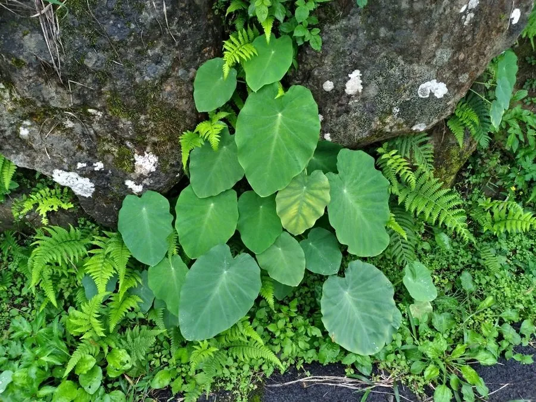

农作物与经济植物 · 植物界
芋头 Colocasia esculenta

芋头的地下球茎富含淀粉，口感软糯，可蒸煮、做菜和制甜品，喜温暖湿润，是南方常见的粮食与蔬菜作物。
- 分类
- 门被子植物门纲单子叶植物纲目泽泻目科天南星科属芋属
- 栖息环境
- 热带、亚热带湿润的平原与山麓，喜高温高湿、半阴
- 地理分布
- 原产南亚与东南亚，现中国南方、东南亚、太平洋岛屿等地广泛栽培
- 保护级别
- 暂无评估（栽培作物）
物种志
芋头是天南星科多年生草本，株高 0.8–1.5 m。叶片大，盾状心形或箭形，长 20–60 cm，叶柄长而肥厚，呈绿色或紫红色。地下球茎（母芋）球形或椭圆形，周围着生许多小芋（子芋），球茎富含淀粉，表面有褐色纤维状鳞叶。肉穗花序藏在叶鞘内，佛焰苞黄色。
芋头原产南亚与东南亚的热带地区，栽培历史数千年，中国南方栽培普遍，是重要的粮菜兼用作物。它喜高温高湿、半阴环境，不耐寒，适宜在土层深厚、保水力强的壤土中种植，多用子芋繁殖。芋头球茎富含淀粉和黏液，可蒸煮、炖肉、做甜品，是南方节庆与日常食材；叶柄可腌制食用。芋头的黏液含草酸钙针晶，生芋接触皮肤会发痒，需煮熟后食用。
形态与习性
- 株高0.8–1.5 m
- 叶盾状心形，叶柄肥厚
- 球茎母芋与子芋，富含淀粉
- 繁殖用子芋繁殖
- 食用蒸煮、炖肉、甜品
- 注意生芋黏液会刺激皮肤
趣味知识
- 我们吃的芋头其实是地下的球茎，大的是母芋，小的是子芋。
- 生芋头的黏液含草酸钙针晶，碰到皮肤会发痒，所以要煮熟。
- 芋头在南方既是粮食又是蔬菜，饥荒年代曾作主粮。